Vester Tørslev
Feinkörniger gräulicher Granit
Höhe ü. d. Erdboden: 154 cm
Größte Breite: 80 cm
Dicke ca.: 45 - 55 cm
Runenhöhe: 14 / 15 / 16,5 cm
Kreuzgröße: 15,5 x 11 cm
Runeninschrift :
hala, litu Sohn, errichtete diesen Stein für Asulf, seinen Bruder.

44 - Vester Tørslev (oder Gætterup Stein) - Letztes Update 09.09.2025
Listennummer : DR 124 / DK MJy 52
| Navidaten: 56.59847 9.90022 oder: Søbjergvej 7, 9550 Mariager |
Transliteration: : hala : risþi : stin : | : þąnsi : | litu : sun : i | ft : ąslf : bruþur : sin :
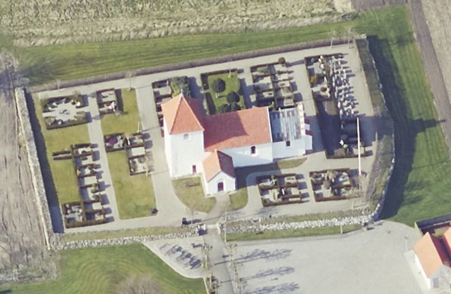
Das ist ein Luftfoto vom 18.04.2023 von Skråfoto das die Kirche von Vester Tørslev zeigt. Skråfoto ist eine Webanwendung, die von Klimadatastyrelsen weltweit kostenlos bereitgestellt wird - Freie Nutzung unter Beachtung der Lizenz: CC BY 4.0. Die Aufnahmen werden alle zwei Jahre erneuert und neben einer Senkrechtaufnahme wird ein Schrägbild aus jeder Himmelsrichtung angeboten, das man über eine Adresssuche aufrufen kann.
Dieser Runenstein wurde im Jahre 1870 von dem Landwirt Jens Laursen Søgaard (*1810 - 04.12.1891) und seinem Sohn auf ihrem Feld bei Gjettrup in einem Graben gefunden (Abweichende Schreibweisen: Gjetterup / Gettrup / Gætterup). Die Örtlichkeit liegt beim alten Landweg zwischen Vester Tørslev und Gjettrup, etwas nördlich vom Glenstrup See. Bei dem Eintrag "Törslev Sten" (rot eingekreist) auf der u.a. alten Landkarte handelt es sich nicht um die Fundstelle des Runensteins. Hier ist ein Großsteingrab gemeint. Informationen / Bildmaterial dazu findet man bei Fund og Fortidsminder und bei Trap Lex - Danmarks Nationalleksikon.
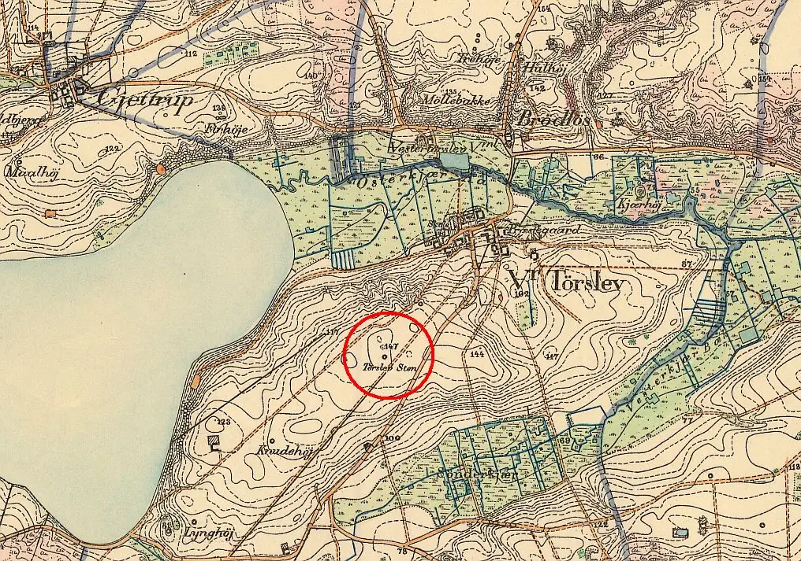
Quelle: Historiske Kort - Karte von 1880 - Maßstab 1:20000Durch Johannes Frederik (Frits) Christian Uldall (*11.02.1839 - 21.02.1921, Architekt und Historiker - link-LIVES)
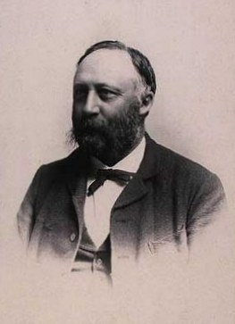
Bildquelle: Wikipedia - Lizenz: Public Domainwurde nach dem Runensteinfund am 31.08.1870 eine schriftliche Meldung mit einer Zeichnung an das Nationalmuseum auf den Weg gebracht, die sich bis heute im Nationalarchiv in Kopenhagen erhalten hat. Der Stein wurde darüber sofort von der Direktion für die Erhaltung antiquarischer Denkmäler für 10 Rigsbankdaler vom Grundbesitzer angekauft und unter Mithilfe des Gutsbesitzers Christen Johan Høgh Brask (*20.05.1834 - 22.06.1906 - link-LIVES) vom Kjellerupgaard im Waffenhaus der Kirche von Vester Tørslev aufgestellt, wo er sich noch heute befindet.
Eine "vorläufige Bekanntmachung" zu dem Runenstein, begleitet von dieser lithographierten Darstellung, wurde erst zwei Jahre später in " Samlinger til Jydsk Historie og Topografi, IV Bind, 1872-73, S. 197-198" - siehe auch unten zu Literaturhinweise (Autor unbekannt) - eingereicht.
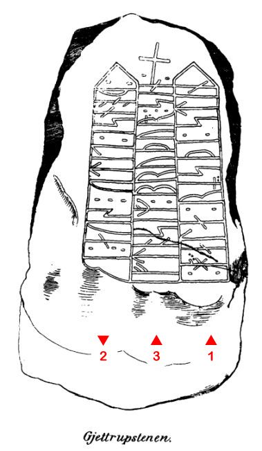
Leserichtung von mir nachträglich eingefügt.Über der mittleren Runenreihe ist zusätzlich ein Kreuzzeichen eingeritzt. Erik Moltke formuliert in DR zu Nr. 124, S. 161 im Textband: "...unansehnliches Kreuz, das vielleicht erst später hinzugefügt wurde, nachdem "Hala" oder ein anderer Genannter sich zum Christentum bekannte".
Die Steinoberfläche ist sorgfältig zurechtgehauen worden, bevor die Inschrift angebracht wurde. Die Inschrift wird von den Runologen in die Zeit von 970 - 1020 datiert. Die Inschrift beginnt in der rechten Linie und verläuft von unten nach oben, setzt sich in der linken Linie von oben nach unten fort und endet in der mittleren Linie von unten nach oben gelesen. Die beiden äußeren Runenbänder enden jeweils oben mit einem Dreieck als Verzierung. Die Interpretation der Namen ist in der Forschung umstritten. In jedem Fall muss "ąslf" ergänzt werden, damit es Sinn macht. Bei den beiden anderen Namen handelt es sich vermutlich um Männernamen, die wohl weiblich flektiert sind (Siehe Lena Peterson, 2007, S. 129 - Halla (?) mn / S. 158 - Lētta (?) mn el kvn / in: Nordiskt runnamnslexikon).
In der Kirche finden sich auch schöne Kalkmalereien, die wohl um 1275-1300 in der Frühgotik entstanden sind (siehe Fotos unten). Sie zeigen neben dem Erzengel Michael einige Fabelwesen.
Die Kirche ist normalerweise vom 1.5. bis 30.09. zwischen 08.00 und 16.00 Uhr geöffnet (ohne Gewähr!).
Im Rahmen meiner 2022er Jütland Wikinger-Tour war ich am Dienstag, 14.06.2022, vor Ort und habe diese Fotos gefertigt:
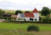 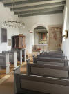 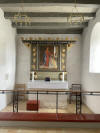 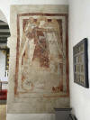 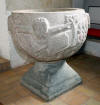 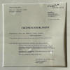


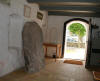 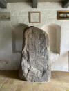 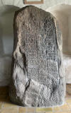 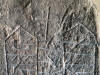 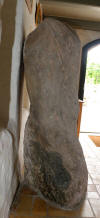 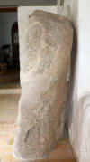 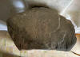


Erstmals habe ich diese Kirche mit ihrem Runenstein am Sonntag, 02.07.2000, besucht. Danach war ich nochmals am Freitag, 26.08.2016, in Vester Tørslev und habe diese Foto aufnehmen können:
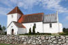 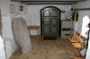 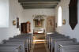 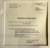 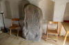 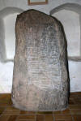 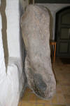 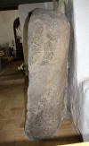


Prof. P. G. Thorsen (*07.08.1811 - 06.05.1883, Bibliothekar, Runenforscher und Historiker - link-LIVES - Artikel: Levnedsbeskrivelser af de ved Københavns Universitets Firehundredaarsfest promoverede Doktorer, Illustreret Tidende 1882, Nr. 1235 - vom 27.05.1833 / Grabstein in Varde / Eheschließung in Varde am 19. August 1848)
 Fotografie
zw. 1863-1900 von
Fotograf Budtz Müller (*26.12.1837 -
30.12.1884) -
Det Kgl. Biblioteks billedsamling - Lizenz:
Public Domain
Fotografie
zw. 1863-1900 von
Fotograf Budtz Müller (*26.12.1837 -
30.12.1884) -
Det Kgl. Biblioteks billedsamling - Lizenz:
Public Domain
hat in seinem Runenwerk " De danske runemindesmærker beskrevne og forklarede, anden Afdeling, Jyllands Runemindesmærker, I. Afbildninger, 1879 - Nr. 49" - Google Scan - diese Zeichnung von Prof. Julius Magnus Petersen (*04.09.1827 - 31.01.1917, Archäologischer Zeichner und Restaurator - link-LIVES - Bestattungsprotokoll)
 Bildquelle: Fotografie
von 1903 von Fotograf Marius Christensen
(*24.06.1874 -
25.06.1907) -
Det Kgl. Biblioteks billedsamling - Lizenz:
Public Domain
Bildquelle: Fotografie
von 1903 von Fotograf Marius Christensen
(*24.06.1874 -
25.06.1907) -
Det Kgl. Biblioteks billedsamling - Lizenz:
Public Domain
aufgenommen. In seinem Band II, 1880, macht er auf den S. 141-142 kurze Ausführungen zu dem Runenstein.
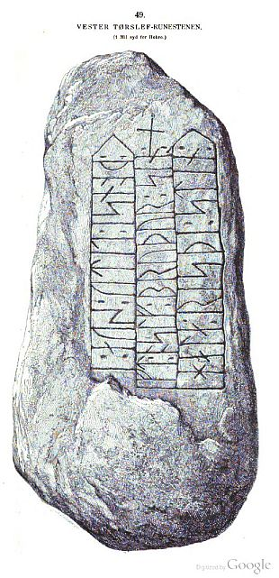
P. G. Thorsens Nachlass (Bezeichnet als: P. G. Thorsens optegnelser, tegninger m.m. vedrørende runer og runemindesmærker - überführt aus der Kopenhagener Universitätsbibliothek 1929 - Gemäß Ministerialschreiben vom 04.03.1929; früher benannt als Additamenta 612 kvart) - findet sich in der Königlichen Bibliothek unter NKS 3296 kvart (in mehreren einzelnen Pappschachteln). In der Pappschachtel mit der Nummer 17 fand ich bei meinem Besuch am 27.09.2022 diese feine Zeichnung von Magnus Petersen, die er auf den 05. September 1870 datiert hat.

Darauf hat er auch notiert, dass der Runenstein vom Landwirt Jens Laursen Søgaard (*1810 - 04.12.1891 - link-LIVES) und seinem Sohn auf seinem Feld bei Gjettrup gefunden wurde.
Prof. Ludv. F. A. Wimmer (*07.02.1839 - 29.04.1920, Philologe und Runenforscher - link-LIVES - Politiets registerblade - Bestattungsprotokoll)
 Bildquelle:
Fotografie zw. 1877-1900 von Fotograf Hansen & Weller
-
Det Kgl. Biblioteks billedsamling - Lizenz:
Public Domain
Bildquelle:
Fotografie zw. 1877-1900 von Fotograf Hansen & Weller
-
Det Kgl. Biblioteks billedsamling - Lizenz:
Public Domain
berichtet in seinem großformatigen Runenwerk "De danske runemindesmærker undersøgte og tolkede af Ludv. F. A. Wimmer, Andet Bind, Runestenene i Jylland og på øerne. 1899-1901 - Nr. 48, S. 221ff. - über den Runenstein und bringt die u.a. Zeichnung von Magnus Petersen - eigener Scan. Wimmer hat den Runenstein persönlich vor Ort am 04. August 1878 untersucht.
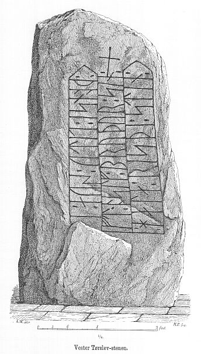
Ludv. F. A. Wimmer hat seine jahrelangen Aufzeichnungen der
"Kgl.
Bibliotek" in
Kopenhagen überlassen. Ein
Verzeichnis darüber wurde 1915 in Buchform herausgegeben
"Collectio
runologica Wimmeriana : Fortegnelse over
Ludv.
F.
A.
Wimmers runologiske o.
a.
Samlinger
i Det kgl.
Bibliotek"
-
In seinen Unterlagen in der Königlichen Bibliothek in Kopenhagen befinden sich unter "III - Originaltegninger af de danske Runemindesmærker, udførte paa Undersøgelsesrejserne af Magn. Petersen og kontrollerede paa Stedet af Ludv. Wimmer, samt Prøvetryk af de paa Grundlag af de nævnte Tegninger, Aftryk o. s. v. til De danske Runemindesmærker" udførte Afbildninger med Wimmers Rettelser"


zu dem Runenstein von Vester Tørslev unter der Nr. 59 diese Zeichnung von Magnus Petersen - datiert auf den 04.08.1878 - die ich am 27.09.2022 fotografieren durfte.

Hugo Gering (*21.09.1847 - 03.02.1925, Professor für ältere deutsche und germanische Philologie)
 Bildquelle:
Wikipedia - Lizenz:
Public Domain
Bildquelle:
Wikipedia - Lizenz:
Public Domain
schrieb in einer Abhandlung mit dem Thema "Neuere Schriften zur Runenkunde" innerhalb der Zeitschrift für Deutsche Philologie, Band 38, von 1906, in der er über die damals neu veröffentlichten Runenbände von Ludv. F.A. Wimmer berichtet, auf den S. 130-131 auch einige Worte zu diesem Runenstein:
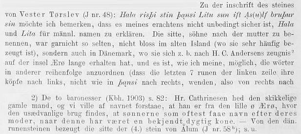
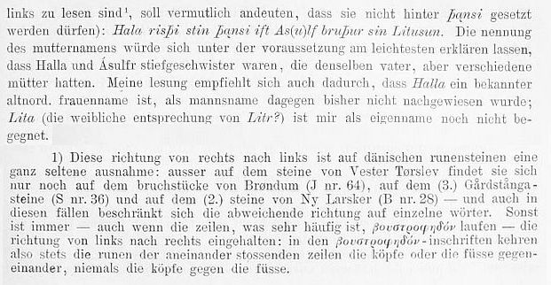
Erik Moltke (*04.04.1901 - 19.10.1984, Runologe, Historiker)
 Bildquelle: Scan von Buchumschlag "Runerne i Danmark og ders
oprindelse" - Erik Moltke - 1976 - Lizenz:
CC-BY-SA
Bildquelle: Scan von Buchumschlag "Runerne i Danmark og ders
oprindelse" - Erik Moltke - 1976 - Lizenz:
CC-BY-SA
hat diese sw Aufnahme am 28.07.1930 gefertigt.
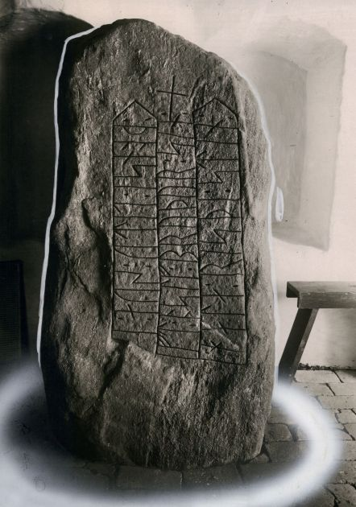
Quelle: Digitale Sammlung des Nationalmuseums in Kopenhagen - Lizenz: CC-BY-SA
Im Vorfeld zu dem 2016 erschienenen Buch von Lisbeth M. Imer (*1973, Runologin am Nationalmuseum Kopenhagen) "Danmarks Runesten - en fortælling" reiste sie mit dem Fotografen Roberto Fortuna zur Bestandsaufnahme durch die Lande. Dieser hat die Runensteine mit Schräglicht aufgenommen und darüber wirklich herausragende Fotos erzielt. Diese Fotografien stammen vom 21. März 2012.
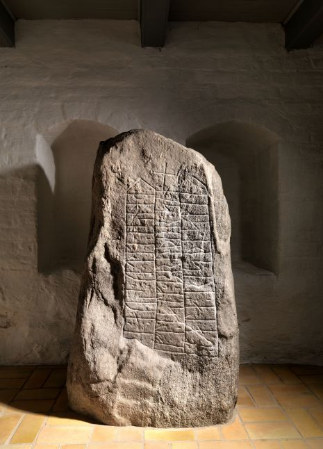
Quelle: Digitale Sammlung des Nationalmuseums in Kopenhagen - Lizenz: CC-BY-SA
Den Eintrag zu diesem Runenstein aus der dänischen Runen Datenbank im Internet kann man hier abrufen.
Die Informationen in "Fund og Fortidsminder" zu dem Runenstein finden sich hier. Darin ist inzwischen dieser Zustandsbericht des Steinrestaurators Leif Vognsen aus dem Jahr 2018 eingebettet.
Über diesen Link finden sich zu dem Runenstein Informationen des Forschungsprojektes "Runes" der Akademie der Wissenschaften zu Göttingen.
Über die Webseite von www.biopix-foto.de kann man ein Foto dieses Runensteins mit rot nachgezeichneten Runen anschauen, was natürlich eine deutlich verbesserte Ansicht darstellt, auch wenn die Runen im Vergleich zu anderen Runensteinen eigentlich gut lesbar sind.
Literaturhinweise:
Tvende Runestene (Foreløbig meddelelse) - Med to lithograferede Afbildninger - Samlinger til Jydsk Historie og Topografi, IV Bind, 1872-73, S. 197-198 - Zeichnungen der beiden im Text behandelten Runensteine von Vester Tørslev und Mejlby sind dem Artikel (ohne eigene Seitenzahl) vorangestellt.